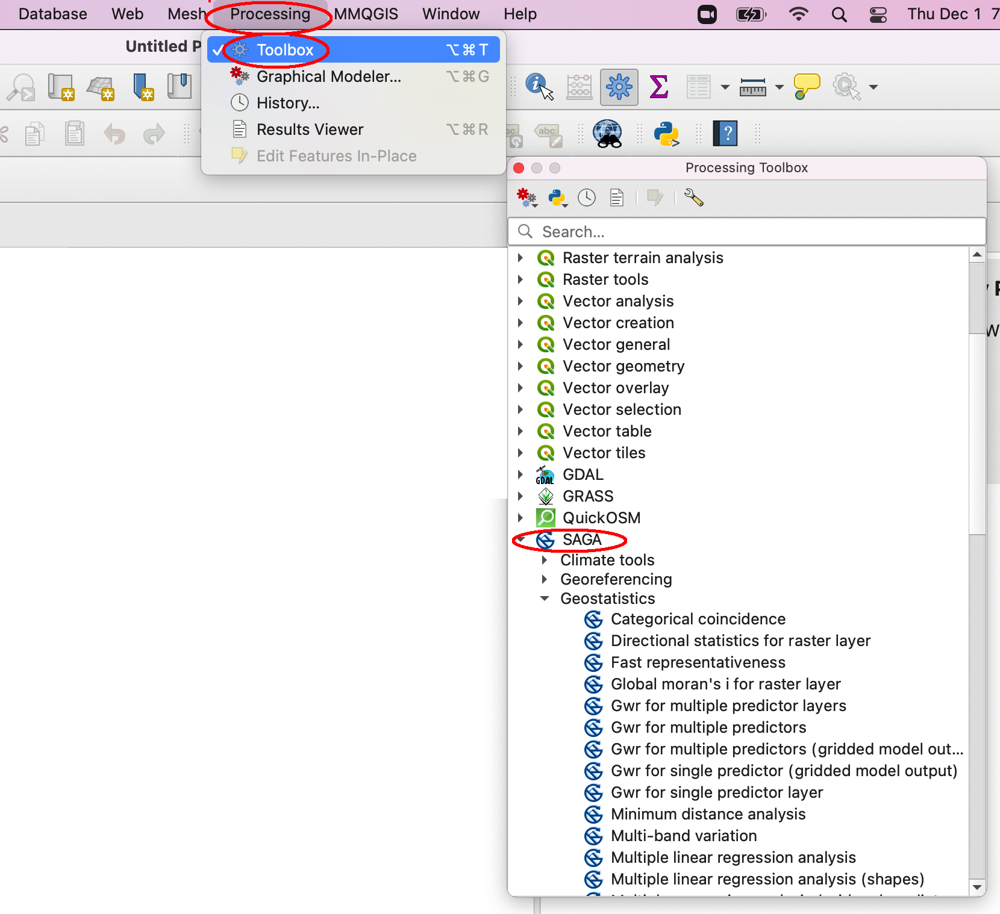

9. Analyzing Points Data
GIS software has numerous functions for statistically analyzing GPS points or points data obtained from other sources. Below is a list of a few statistical operations that can be performed on points data:
Calculate mean center of a set of points or lines
Calculate weighted mean center of a set of points or lines
Calculate all points that are within one or more standard distance circles of the mean center
Calculate all points that are within one or more standard deviation ellipse of the mean
Calculate a point density surface to show areas where the points are concentrated and where they are not concentrated.
Interpolate a statistical surface from a set of points
Cluster Analysis. Detecting whether points are randomly distributed, clustered, or dispersed.
9.1. Measures of Spatial Central Tendency
Mean Center
The mean center of a set of points is a point calculated by taking the average of the x coordinates and the average of the y coordinates and then plotting a point with the two averages.
In QGIS, mean center is calculated, as shown below, by clicking on Vector, Analysis Tools, Mean Coordinates.
When the dialog opens, make sure the input file is correct and click Run in Background.
Weighted Mean Center
Weighted mean center recognizes that in some situations all points do not have equal significance. For example, if you conduct bird sightings at various locations. Each location may have different number of birds sighted. To take this variation in consideration, we calculate the weighted average.
In QGIS, weighted mean center is calculated using the same dialog as mean center. However, for you to calculate weighted mean center, one of the fields must contain data to serve as the weight.
Standard Distance Circle
When studying central tendencies, we are interested not just in the average or mean center of a distribution, but also in the degree to which the values are dispersed around the mean. To understand this, we calculate the standard deviation of the dataset. In GIS, we calculate standard deviations from the X and Y coordinates and then use this value as a radius to draw a circle around the mean center of the distribution. This circle is called a standard distance circle. If the circle is small, it means that the points are clustered closely around the mean. If the circle is large, the points are highly dispersed around the mean. To calculate standard distance circles in QGIS, do the following:
Click on the Processing Toolbox in the main menu, then search for the tool Spatial Point Pattern Analysis tool.
Double click on the tool to open its dialog. This shown below.
Standard Distance Ellipse
This is similar to the standard distance circle except that the formula is modified to detect the main linear trend in the dataset. The Y-axis (and the X axis) are rotated to show the trend. To calculate standard distance ellipse, do the following:
Click on the Processing Toolbox in the main menu, then search for the tool Spatial Point Pattern Analysis tool.
Double click on the tool to open its dialog. This shown below.
9.2. Point Pattern Analysis
Point Pattern analysis techniques compare observed point patterns to ones generated by an independent random process to determine whether points are randomly distributed, or whether some pattern exists in the data. Popular point pattern techniques include:
Quadrat Analysis
Ripley K Statistic
Global and Local Moran’s I
Global and Local G* Statistic
Nearest Neighbor Analysis
Click on the menu item Vector ‣ Analysis Tools ‣ Nearest neighbor analysis. Click here for more information
You can also click on this link for more information on Nearest Neighbor Analysis.
Global and Local Moran’s I
The SAGA GIS toolkit provides many functions for spatial statistis including Moran’s I calculation. You can access these functions by clicking on Processing on the main menu then selecting Toolbox | SAGA GIS.
In many situations, it might be more convenient to complete the point pattern analysis using the R Software
The links below provide information on how to conduct point pattern analysis in QGIS.
9.3. Density Mapping
Density maps shows the number of points per unit area. Conceptually, there are created by placing a grid over the study area and for each cell in the grid, the software sets up a search radius and counts the number of points within that radius. This gives the simple density of points within that vicinity. This type of analysis is good for creating hotspot maps. In the illustration below, the density map shows the number of asthma cases per unit area. The hotspots are areas where lots of asthma cases per unit area (e.g., per sq. mile) are found.
In QGIS, we create point density maps using a tool called Heatmap. In earlier versions of QGIS, Heatmap was a plugin. In the version that I am using (Version 3.2.3), the tool can be accessed from the Processing Toolbox. Let’s perform an analysis.
Make sure that the points layer is displayed.
Click on the Processing Toolbox in the main menu, then look for Interpolation. It is located within the Interpolation Toolset. Alternatively, just search for HeatMap in the Processing Toolbox.
Click on Heatmap to bring up the Heatmap dialog. Select the points layer as the input layer.
Accept the default radius. Radius will determine the size of the area around the points used to calculate density. Radius is calculated in map units. In our case, we are using a projected coordinate reference System (CRS) with a base unit of meters (m).
Accept the default Quartic (biweight) kernel as the particular method for the kernel density computation. This for it defines the direct distance to the point itself.
Accept the default rows and columns and cell sizes. The rows and columns as well as the cell sizes determine the spatial resolution of the target raster. The finer the raster the longer it takes to compute the raster. Keep this in mind. There are also more parameters to adjust but you may want to press the help button to get some insight in the functionality of the plugin itself.
Provide a name for the kernel density map.
Click “Run in Background” to create the kernel density map. The resulting map is a black and white image.
For better visualization, we will change this to a more informative color scheme. Double click on the name of the density map and change the Render Type to Singleband pseudocolor.
Click on the drop-down next to Color Ramp, select All Color Ramps, and choose RyYlGm as the color scheme to use.
Click on Invert Color Ramp.
Click Ok when you are done. The resultant map appears as shown below
Let’s investigate these results further. First, open the properties of the raster go to the histogram tab and compute the histogram. You will see that the curves reach approximately 8 on the x-axis which means that the highest values are about 8 points per km²:
Click on the identify results button and check the value at each location. You may ask, why aren’t the values integers? According to the filter we have used, points near a certain location have bigger influence than points far away a given location. So, the points are weighted in their influence. This is useful as we might have an underlying uncertainty in the location of points. But if we have several points near each other it should be more certain that the point locations are reliable.
9.4. Spatial Interpolation
Spatial Interpolation is the process of creating raster maps from discrete vector points. The concept is shown in the illustration below where we start with a set of well distributed sample points and end up with a map that has values for every location in the study area.
Interpolated maps are different from density maps in that density maps are a count of the number of points per unit y area. On the other hand, interpolated maps are an estimate of the values of some phenomena based on sample location values. Interpolated maps are important because rarely in environmental and other areas of study do we have time or other resources to visit every location in a study area and gather data values. To still get data values for every location, we resort to spatial interpolation, which is a process of estimating values for unknown locations using data values from a set of known locations.
There are many different methods of interpolation but the basic principle is to place a grid over the sample points, and then for each cell in the grid, we set up a search area and count all the points that are within the vicinity of the grid cell. We then take a weighted average of the set of points and use that as the estimate for that cell. Once a value is calculated for one cell, the software moves to the next cell and repeats the process. The way we calculate the weighted average varies considerably, but the basic idea is the same.
Two popular techniques are Inverse Distance Weighting (IDW) and Spline interpolation. We will use IDW with QGIS to create out interpolated map.
Click on the Processing Toolbox in the main menu, then look for Interpolation. Select the IDW tool.
Use this dataset as input.
Click Run in Background.
Examine the data values in the legend.
9.5. Cluster Analysis
Global and Local Moran’s I
Global and Local G* Statistics
9.6. Regression Analysis
Spatial Statistics References
https://docs.qgis.org/3.22/en/docs/training_manual/vector_analysis/spatial_statistics.html
Exploring Standard Statistics in QGIS - https://dges.carleton.ca/CUOSGwiki/index.php/Exploring_Standard_Statistics_in_QGIS
Performing Spatial Queries (QGIS3) - https://www.qgistutorials.com/en/docs/3/performing_spatial_queries.html
Simple Geospatial Analysis with QGIS - https://eamena.org/sites/default/files/eamena/documents/media/gis_3_simple_geospatial_analysis_with_qgis_final.pdf
Spatial Density Analysis in QGIS - https://www.youtube.com/watch?v=WPwGW9BG3DI
Spatial Analyses - https://docs.sigro.org/qgis-basic-training/en/analyses.html
Point Pattern Analysis with R - https://rpubs.com/corey_sparks/579466